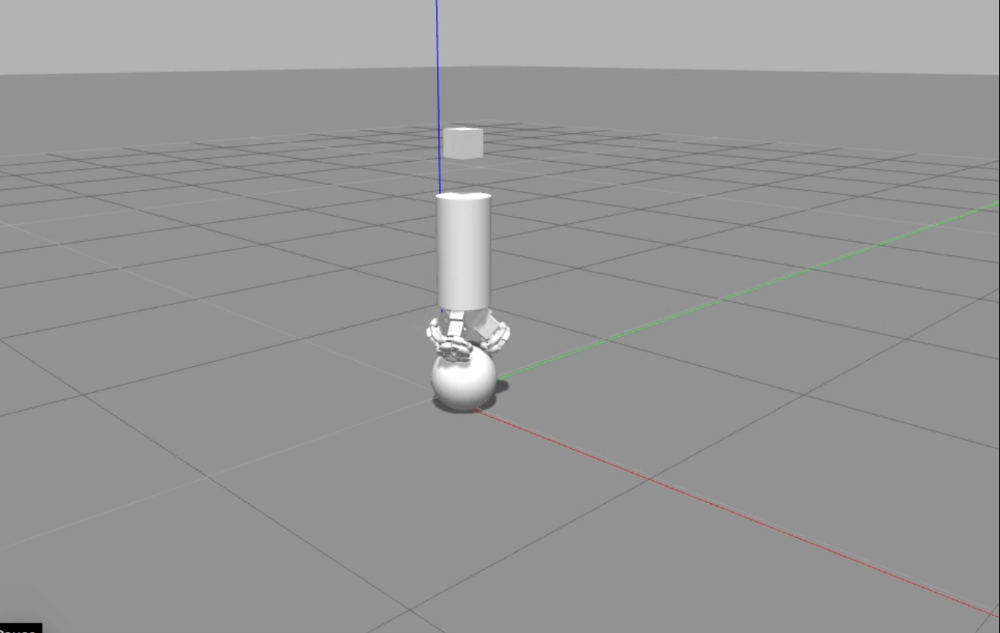

Ballbot
The project was started in the year 2019 with a long-term goal of developing a functioning ballbot indoor robot. The initial problem statement is to build a stable and robust platform that can be used for further research in this domain. A real time simulation of the ballbot has been developed to serve the purpose of a testing platform for various control algorithms, different motors and shapes of the ballbot. Some parts of the robot were designed in Autodesk Inventor and it was simulated using Gazebo and R.O.S. on which control algorithms were implemented. In this simulation the robot is assumed to be on a flat surface throuout its motion. Special Wheels called omni-wheels have been used for this robot to allow the ball to rotate freely without affecting the other wheels. The motors are held together by custom built motor mounts. The following videos show the single point stability and point to point movement for the robot in Gazebo simulations